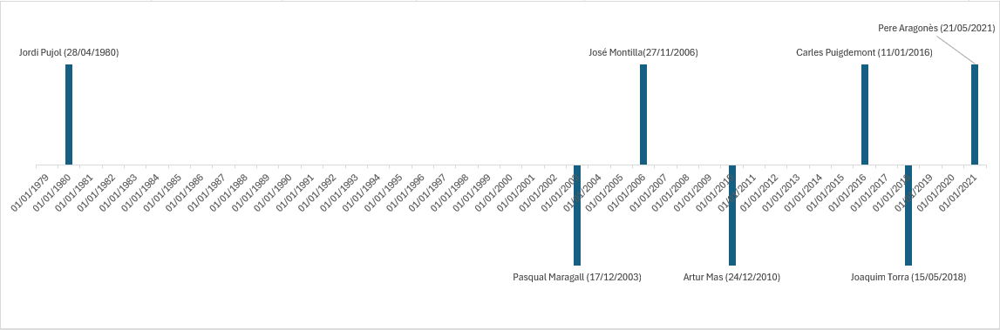
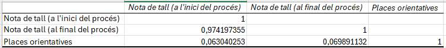
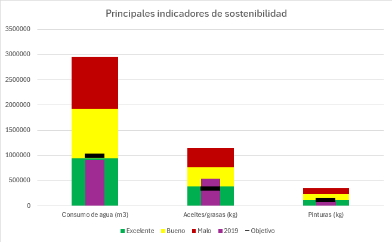

PEC2: Estudio de técnicas de visualización de datos
Técnica de visualización 1: Timeline

Fuente: Titulars de la Presidència, la Vicepresidència i les conselleries de la Generalitat de Catalunya.
Link.
----------------------------------------------------------------------------------------------------------------------------------------------------------------------------------
Técnica de visualización 2: Correlation Matrix

Fuente: Notes de tall d’accés als estudis universitaris (convocatòria de juny 2022).
Link.
----------------------------------------------------------------------------------------------------------------------------------------------------------------------------------
Técnica de visualización 3: Bullet Graphs

Fuente: Principales indicadores de sostenibilidad.
Link.